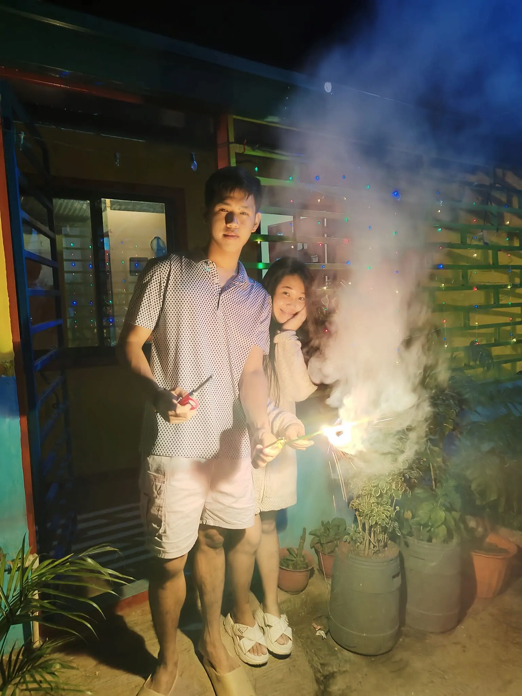

For Keeps

This is my first favorite photo because on this day (December 31, 2022) we traveled to Tanay to celebrate New Year 2023 with my family. It was also the day you reunited with them after a very long time. Cheers to more New Years with you, my love.
.webp)
This moment was when we went to MOA. Simula naghiwalay tayo, that day nalang ulit tayo nakapunta ulit sa MOA.
That day also, we had a misunderstanding but honestly, it’s also the day I truly felt how much you love me.
Even when I kept pushing you away and tried to break up with you, you never left. Tinakbuhan kita and tinaguan, hindi ka napagod hanapin ako.
Despite how annoyed and hurt you must have been because of my attitude that day, you stayed. We still went home together.
I’m sorry again, love. I promise I won’t let that happen again. Thank you for staying.

On this day naman, we went to Manila Ocean Park—first time natin pumunta doon (thanks to Concentrix, libre lahat pati food!).
Sobrang saya ko that time kasi we really enjoyed the sightseeing, panonood ng sea lions, at marami pang iba.
Sana soon, makabalik tayo ulit doon... pero this time, kasama na natin ang little ones natin if papalarin at ibibigay na ni Lord.

I love this picture too, kasi ito yung time na nag-bike tayo sa Riverbanks after natin lakarin yung PAG-IBIG mo.
Ang init noon, pero sobrang saya kasi we were just enjoying our time. Nagmasid, kumain, at nag-bike.
Hindi man ito yung first time natin pumunta dito, pero ewan ko, this one’s one of my favorites.
Konti lang kasi yung tao that day, kaya ang sarap ng feeling—parang ang dami nating nasulit.

Naalala mo 'to? Ito yung time na umalis tayo tapos nakalimutan natin magdala ng payong.
Humingi ka ng laundry plastic sa laundry shop.
That day reminded me of our first time na naligo tayo sa ulan, way back 2019.
Para tayong mga bata—takbuhan, tawanan, at enjoy lang sa ulan.
Tinulungan mo akong mahalin ang ulan. Thank you, love.

I have a lot of favorite pictures—actually, lahat ng photos natin together are my favorites.
Minsan lang rin tayo nakakakuha ng pictures kasi we’re always so caught up enjoying our moments together.
And for me, that’s enough. Basta tayong dalawa, we laugh, we love, and it always feels like we’re in our own little world.
I can’t wait to capture more memories with you.
And I hope, soon, there’ll be three of us in one picture... or more.
I can't wait to build a big, happy family with you.